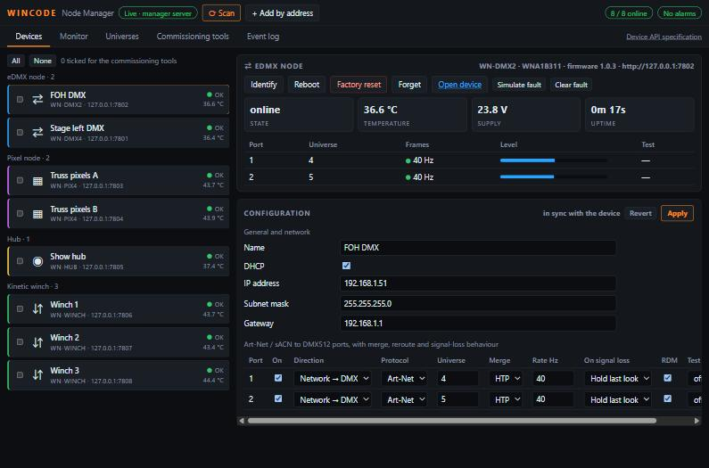
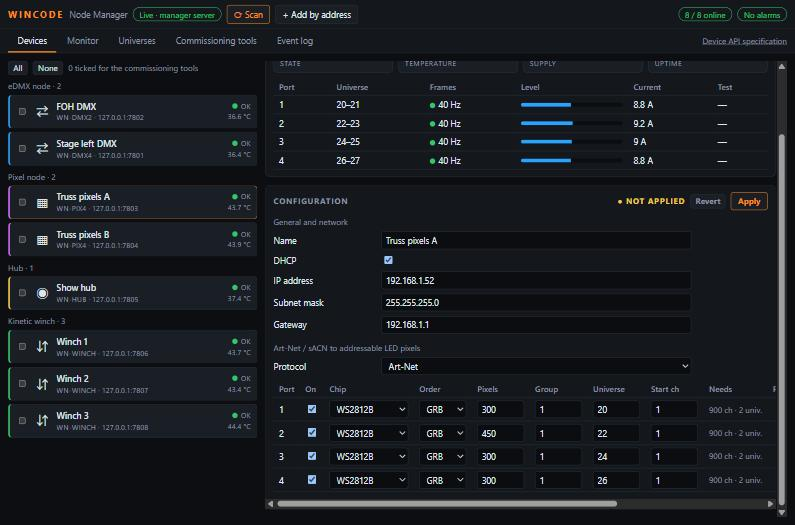
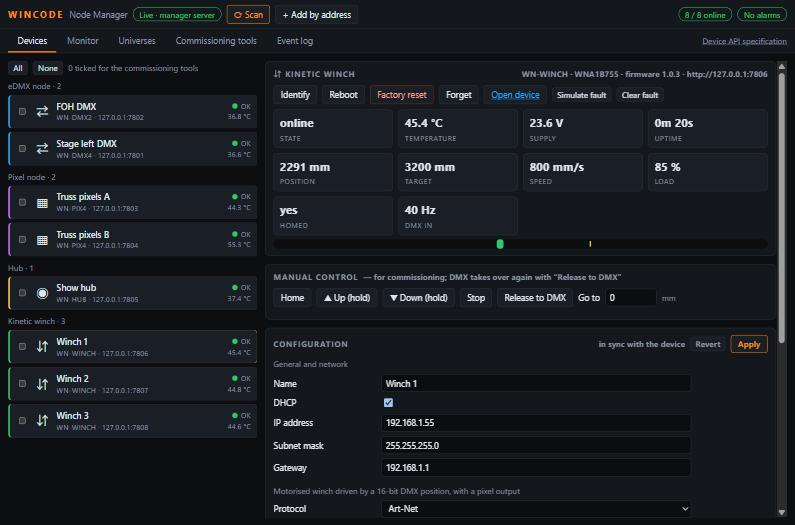
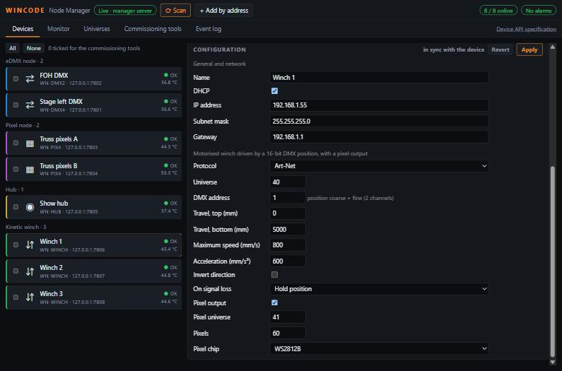
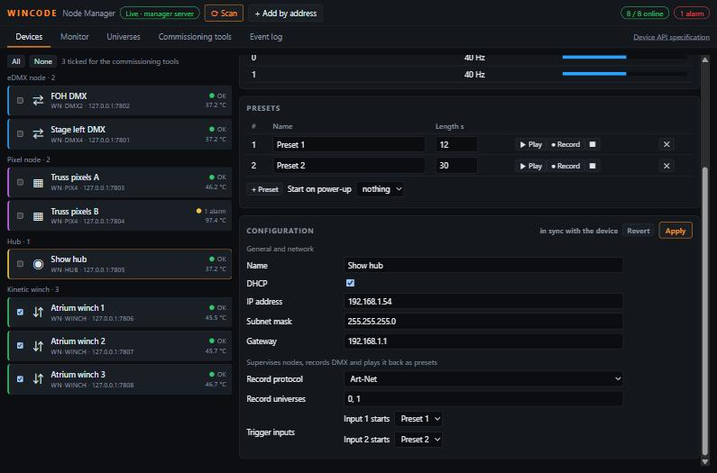
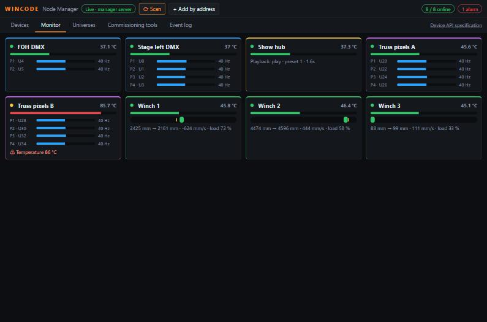
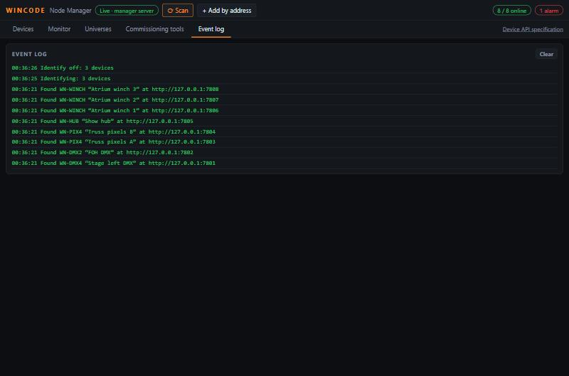

Wincode Node Manager User Manual · configuration, commissioning and monitoring of lighting network nodes
1. What Node Manager is
Node Manager is the tool you use before and during a show, next to the lighting console. The console sends the show data (Art-Net or sACN). Node Manager looks after the boxes that receive it: it finds them on the network, configures them, sets up a whole rig in a few steps (commissioning) and shows what every box is doing while the show runs.
It manages four kinds of Wincode device:
| Device | Models | What it does |
|---|---|---|
| eDMX node | WN-DMX2 · WN-DMX4 · WN-DMX8 | Converts Art-Net / sACN to DMX512 ports (or DMX back to the network). |
| Pixel node | WN-PIX4 · WN-PIX8 | Drives addressable LED pixels (WS2812B, SK6812, APA102 …) from Art-Net / sACN. |
| Hub | WN-HUB | Records incoming universes and plays them back as presets, without a console. |
| Kinetic winch | WN-WINCH | A motorised winch that follows a 16-bit DMX position and carries a pixel lamp. |

The hardware is still being developed. Until it exists, the program works with virtual devices that behave as the firmware will (chapter 16). Everything in this manual can be tried with them. Nothing here has been tested against real hardware yet.
2. Starting the program
Prefer to learn by doing? The tutorials walk through six complete jobs on the example rig.
On your computer (the normal way)
You need Node.js 18 or newer. Nothing else is installed.
git clone https://github.com/samcho93/wincodeNodeManager
cd wincodeNodeManager
npm startThen open http://127.0.0.1:7760 in Chrome or Edge.
| Command | What starts | Use it when |
|---|---|---|
npm start | The manager and eight virtual devices | Learning the program, development |
npm run manager | The manager only | Working with real nodes |
npm run virtual | The virtual devices only | Testing another tool against the device API |
In the browser only (demo)
The page at samcho93.github.io/wincodeNodeManager opens without any installation. A web page alone cannot search a network, so it runs the eight virtual devices inside the page. Every screen works; what you change is forgotten when the page is reloaded.
Live or demo?
The pill next to the name tells you which one you are in:
| Pill | Meaning |
|---|---|
| Live · manager server | The page talks to the manager server on your computer, which talks to the devices on the network. |
| Demo · virtual devices in this page | No server was found. The devices are simulated inside the page. |
| Manager server not reachable | The server was running and has stopped. Start it again; the page reconnects by itself. |
3. The screen
| Part | What it is for |
|---|---|
| Top bar, left | The mode pill, ⟳ Scan and + Add by address (chapter 4). |
| Top bar, right | 8 / 8 online — how many known devices answer; red when one is missing. No alarms — the number of alarms in the rig; red when there is one. |
| Tabs | Devices · Monitor · Universes · Commissioning tools · Event log. On the right, a link to the device API specification. |
The program reads every device once a second. Numbers on the screen are therefore at most a second old.
Each device type has its own colour, used on the left edge of list rows and the top edge of monitor cards: blue eDMX, purple pixel, yellow hub, green winch.
4. Finding devices
When the program starts it asks the network "who is there?" and repeats the question every ten seconds. Every Wincode node that hears it answers and appears in the list. You normally do nothing.
| Button | What it does |
|---|---|
| ⟳ Scan | Asks again at once — after you plugged in a device and do not want to wait. |
| + Add by address | Adds one device by its IP address. Needed when the device is on another subnet (behind a router), where the search cannot reach. Not available in demo mode. |
| Forget (in the device) | Removes the device from the list. The device itself is not changed, and it comes back at the next scan if it is still on the network. |

Online and offline
A device that does not answer three times in a row (about three seconds) is shown offline: greyed in the list, with a red dot. It stays in the list so that you can see which one is missing. When it answers again it turns online by itself and its configuration is read again. Both moments are written to the event log.
5. A device: state and commands
Open the Devices tab and click a device in the list. The right side shows three things: the heading with commands, the live state, and the configuration.
The list
Each row shows the type icon, the name, the model and address, a status dot (green OK, yellow alarm, red offline) and the temperature. The checkbox at the left ticks the device for the commissioning tools (chapter 13); All and None tick or clear every device.
Heading
The heading line gives the model, the device ID (for example WNA1B311 — permanent, printed on the device, never changes), the firmware version and the address.
| Button | What it does |
|---|---|
| Identify | Makes the device blink so that you can find it in the rig. Press again to stop. |
| Reboot | Restarts the device. It goes offline for a few seconds and comes back. |
| Factory reset | Returns every setting to its default — except the name and the network settings, so the device stays reachable. |
| Forget | Removes it from the list (chapter 4). |
| Open device | Opens the device's own web address in a new tab (live mode). |
| Simulate fault · Clear fault | Only on virtual devices: make the device overheat, to see how alarms look. |
Live state
Every device reports state (online, rebooting, offline), temperature, supply voltage and uptime (time since it started). Below that come the values of its type, described in chapters 7–10. Alarms are listed in red under the state.
6. Changing a configuration
The Configuration box shows the settings stored in the device. Changing a field changes only what is on the screen — nothing is sent until you press Apply.

| What you see | Meaning |
|---|---|
| in sync with the device | The screen shows exactly what the device has stored. |
| ● not applied | You changed something that the device does not know yet. |
| Apply | Sends the configuration. The device stores it and uses it at once, without a reboot, and answers with what it actually stored. |
| Revert | Throws your changes away and shows the device's settings again. |
If you select another device while changes are not applied, the program asks whether to discard them.
A device checks every value. A number outside its range is brought back into range, and after Apply the screen shows the value the device accepted — not the one you typed.
General and network
| Field | Meaning |
|---|---|
| Name | How the device is called everywhere in the program. Use names that say where the device is: "Truss pixels A", "Stage left DMX". |
| DHCP | On: the device gets its address from the network. Off: it uses the three fields below. |
| IP address · Subnet mask · Gateway | The fixed address. With DHCP on they are the fallback when no address is given. |
Changing the network settings can move the device to an address your computer cannot reach. Change them last, and check them twice.
7. eDMX node
An eDMX node has 2, 4 or 8 DMX ports. Each port is set on its own row.
State
| Column | Meaning |
|---|---|
| Universe | The universe the port listens to, or off. |
| Frames | Frames received in the last second. A console normally sends 30–44 Hz. 0 Hz with a red dot = nothing arrives. |
| Level | The average level of the channels — a quick sign that the data is alive and changing. |
| Test | The test pattern running on the port, if any. |
Configuration
| Field | Choices | Meaning |
|---|---|---|
| On | ☑ | Switches the port on or off. |
| Direction | Network → DMX · DMX → network | Output (the usual case), or input: DMX from a desk is sent to the network. |
| Protocol | Art-Net · sACN | Must match what the console sends. |
| Universe | 0–63999 | The universe number of this port. |
| Merge | HTP · LTP | When two consoles send the same universe: HTP the higher level wins, channel by channel; LTP the latest change wins. |
| Rate Hz | 1–44 | How often the DMX line is refreshed. Lower it for old fixtures that flicker at 44 Hz. |
| On signal loss | Hold last look · Blackout | What the port does when the network data stops. |
| RDM | ☑ | Allows RDM on this port. Switch it off for fixtures that misbehave with RDM. |
| Test | off · red · green · blue · white | Sends a test level on the port at once (no Apply), overriding the network until set to off. |
8. Pixel node
A pixel node has 4 or 8 pixel outputs. One protocol is chosen for the whole node; everything else is per port.
State
As for the eDMX node, with two differences: Universe shows a range (20–21) when the port needs more than one universe, and Current estimates the current the strip draws at the present level.
Configuration
| Field | Choices | Meaning |
|---|---|---|
| Chip | WS2812B · WS2811 · SK6812 · SK6812-RGBW · APA102 · UCS2903 | The LED type on the strip. |
| Order | GRB · RGB · BRG · RBG · GBR · BGR · GRBW · RGBW | The colour order of the chip. If red and green are swapped, this is the field. |
| Pixels | 0–4096 | How many pixels are connected. |
| Group | 1–64 | How many neighbouring pixels are controlled as one. Group 3 on 300 pixels = 100 controlled pixels, a third of the channels. |
| Universe · Start ch | 0–63999 · 1–512 | Where the first pixel is. |
| Needs | shown | The channels and universes this port needs with the present values — calculated for you. |
| Reverse | ☑ | The data enters at the far end of the strip. |
| Limit % | 1–100 | A brightness ceiling, to stay inside the power supply's capacity. |
| Gamma | 1.0–3.0 | Dimming curve. 2.2 gives smooth low levels; 1.0 is linear. |
| Test | off · red · green · blue · white · chase · rainbow | A test pattern on that output, at once. |
How many universes? An RGB pixel uses 3 channels, so one universe holds 170 pixels (510 channels); an RGBW pixel uses 4, so 127 pixels. A pixel is never split over two universes. A port with 300 RGB pixels needs 900 channels = 2 universes, and uses the universe you set and the one after it. Leave that next number free — the Universes tab (chapter 12) shows clashes.
9. Kinetic winch
A winch raises and lowers a lamp. The console sends a position as two DMX channels (16 bit); the winch moves there with its own speed and acceleration limits. It also carries a pixel output for the lamp.

State
| Value | Meaning |
|---|---|
| Position · Target | Where the lamp is, and where it is going, in millimetres below the top. |
| Speed | mm/s. Positive = going down, negative = going up. |
| Load | How hard the motor works, in percent. |
| Homed | yes once the winch has found its top reference since power-up. Until then its position is not trustworthy. |
| DMX in | Frames per second on its position universe. |
Manual control
For setting up, before the console is connected or to check one winch.
| Button | What it does |
|---|---|
| Home | Runs to the top reference and sets the position to 0. Do this first after power-up. |
| ▲ Up (hold) · ▼ Down (hold) | Moves while the button is held, at 40 % of the maximum speed. Release to stop. |
| Stop | Stops where it is. |
| Go to … mm | Type a position and press Enter: the winch moves there. |
| Release to DMX | Ends manual control. The winch follows the console again. |
Manual control wins over DMX. After Home, jog, Stop or Go to, the winch ignores the console until you press Release to DMX. If a winch does not follow the show, this is the first thing to check.
Configuration

| Field | Meaning |
|---|---|
| Protocol · Universe · DMX address | Where the position is read. It takes two channels: coarse at the address, fine at the next one. Several winches usually share one universe with different addresses. |
| Travel, top · bottom (mm) | The range of movement. DMX 0 = top, DMX full = bottom. Set bottom so that the lamp can never reach the floor or the audience. |
| Maximum speed (mm/s) | The winch never moves faster, whatever the console asks. |
| Acceleration (mm/s²) | How quickly it speeds up and brakes. Lower = softer movement, less swing of the lamp. |
| Invert direction | Swaps the two ends: DMX 0 = bottom. |
| On signal loss | Hold position or Go home when the console's data stops. |
| Pixel output · universe · pixels · chip | The lamp on the winch: switch it on, give it its own universe, and say how many pixels of which type it has. |
Safety. Moving loads above people are a mechanical-safety matter. The travel and speed limits in this program are operating settings, not a safety system; limit switches, load-rated rigging and the applicable regulations are what protect people.
10. Hub
The hub records the show data it receives and plays it back later, so that an installation can run without a console.

State
| Value | Meaning |
|---|---|
| Playback | idle, play or record. |
| Preset | Which preset, and how many seconds into it. |
| Recorded | Storage used by the presets. |
| Recording universe · Frames · Level | The universes the hub listens to, and whether data arrives on them. |
Presets
| Control | What it does |
|---|---|
| Name · Length s | The preset's name and length in seconds. These are configuration: press Apply after changing them. |
| ▶ Play | Plays the preset in a loop. |
| ● Record | Records the incoming universes into this preset. Start the cue on the console, press Record, and press ■ when it is over. |
| ■ | Stops playback or recording. |
| ✕ · + Preset | Removes or adds a preset (then Apply). |
| Start on power-up | A preset that starts by itself when the hub is switched on — for installations that must run unattended. |
Configuration

| Field | Meaning |
|---|---|
| Record protocol | Art-Net or sACN. |
| Record universes | The universes to capture, separated by commas: 0, 1, 20, 21. |
| Trigger inputs | The hub has contact inputs (a push button, a time switch). Choose which preset each input starts. |
11. Monitor
The Monitor tab is the view to leave open during a show: one card per device, the whole rig on one screen.

| On a card | Meaning |
|---|---|
| Dot and name | Green OK · yellow alarm · red offline. |
| Temperature bar | Green up to 60 °C, yellow above, red above 75 °C. |
| P1 · U4 ▬▬ 40 Hz | eDMX and pixel nodes: per port, the universe, the level and the frame rate. |
| Position bar | Winches: position (green) and target (yellow), with the numbers below. |
| Playback | Hub: what it is playing or recording. |
| ⚠ red line | The alarm, in words. |
Click a card to open that device in the Devices tab.
12. Universes
The Universes tab lists every universe that any device listens to, sorted by number: which device, which port, what the universe carries there, and whether data is arriving.

Use it for three questions:
- What do I patch on the console? The list is exactly the set of universes the console has to send.
- Did I number something twice? A universe used by more than one output is marked shared by … outputs. That is allowed — two outputs then show the same data, and a hub recording a universe always shares it — but it is the usual sign of a numbering mistake.
- Is the data arriving? A red dot and 0 Hz on a row means that universe is not being sent, or not reaching that device.
13. Commissioning tools
Commissioning is setting up a whole rig: dozens of devices that all need a name, universe numbers and the same settings. The tools do that in one step each.

Which devices? The tools work on the devices you ticked in the Devices list. With nothing ticked they work on all devices. The line at the top of the tab says which it is. Unlike the configuration box, the tools write at once — there is no Apply.
| Tool | What it does |
|---|---|
| Number the universes | Gives every output its own universe, counting up from Start at, in the order of the list. An eDMX port takes one universe, a pixel port as many as its pixels need, a winch one for its pixel lamp (its position address is not changed). Hubs are skipped. All of them are set to the chosen protocol. |
| Name the devices | Names the devices Prefix 1, Prefix 2 … in list order. Tick the three winches, type "Atrium winch", press Rename. |
| Copy a configuration | Copies the settings of one device to the ticked devices of the same model — everything except the name and the network settings. Set one pixel node up properly, then copy it to the others. |
| Find and restart | Identify on / Identify off for all of them at once; Reboot restarts them. |
| Backup and restore | Download backup saves the configuration of the devices as one file (wincode-nodes-date.json). Restore from a backup… writes a file back; each device is matched by its ID and model, and devices that are not on the network are counted and reported. |
Take a backup when the rig works. It is the fastest way back after someone "only changed one thing".
14. Event log
The Event log records what happened since the page was opened, newest first: devices found, devices going offline and coming back, alarms appearing and clearing, and what you applied or ran.

The log lives in the page: reloading the page or pressing Clear empties it. It holds the latest 400 lines.
15. Alarms
A device raises an alarm by itself; the program shows it in the list (yellow dot), on the monitor card, in the device's state, in the top bar and in the log.
| Alarm | Raised when | What to do |
|---|---|---|
| Temperature … °C | The device is hotter than 75 °C. | Check ventilation and the load; for a pixel node lower Limit %. |
| Supply … V | The supply is below 20 V. | Check the power supply and the cable length. |
| No data on universe … | An enabled output receives nothing. | Is the console sending that universe, with that protocol? Is the output's universe number right? Switch unused ports off. |
| Motor stalled | A winch motor is blocked. | Stop, look at the winch, remove the cause before moving again. |
16. Virtual devices and demo mode
The virtual devices are small simulations of real nodes: they answer the network search, keep a configuration, warm up under load, receive universes and — the winches — move with speed and acceleration. The program cannot tell them from real ones, which is the point: they are what the firmware is being written against.
| Virtual fleet | Devices |
|---|---|
| eDMX | Stage left DMX (WN-DMX4) · FOH DMX (WN-DMX2) |
| Pixel | Truss pixels A · Truss pixels B (WN-PIX4, 300 pixels per port) |
| Hub | Show hub |
| Winch | Winch 1 · 2 · 3, sharing one position universe |
- They make their own show data. With no console, each virtual device behaves as if a console were sending moving levels, so frame rates and levels are alive and the winches travel slowly up and down.
- A real console takes over. With
npm start, the virtual devices also listen for real Art-Net and sACN on your computer (when those ports are free). Send a universe from a console and the device that listens to it follows the console instead. - Faults on request. Simulate fault makes a virtual device overheat; within some seconds the temperature alarm appears. Clear fault ends it.
- Nothing is kept. Restarting the program (or, in demo mode, reloading the page) returns the virtual fleet to its starting state.
17. Commissioning a rig, step by step
A complete pass with the virtual fleet. It takes about ten minutes and uses every part of the program.
- Start and look. Run
npm startand open the page. The pill says Live, the top bar says 8 / 8 online. Open Monitor: eight cards, all with moving levels. - Find a device. In Devices, click "Truss pixels A" and press Identify. On a real rig that node now blinks. Press it again to stop.
- Set one device up properly. Still on "Truss pixels A": set port 1 to 450 pixels. Needs changes to "1350 ch · 3 univ." and the box says ● not applied. Set Limit % to 80 on every port. Press Apply.
- Copy it. Tick "Truss pixels B". Open Commissioning tools, choose "Truss pixels A" under Copy a configuration and press the copy button. Truss pixels B now has the same ports — with its own name and address.
- Number the universes. Go back to Devices, press None so that the tools work on everything. In the tools, leave Start at at 0 and press Number in list order.
- Check the map. Open Universes. Every output has its own number, in order. Only the hub's recording universes and the winches' shared position universe are marked shared — as intended. This list is what you patch on the console.
- Name the winches. Tick the three winches, and in the tools type the prefix "Atrium winch" and press Rename.
- Check a winch by hand. Open "Atrium winch 1". Press Home, then type 1500 in Go to and press Enter. Watch position follow target. Press Release to DMX when you are done — otherwise it will not follow the show.
- See an alarm. Open "Truss pixels B" and press Simulate fault. In Monitor its temperature climbs, the bar turns red and the top bar shows 1 alarm. Press Clear fault.
- Take a backup. In the tools, with nothing ticked, press Download backup. Keep the file with the show.
- Read the log. Open Event log: everything you just did is there, with times.
18. Troubleshooting
| Problem | Cause and remedy |
|---|---|
| The pill says Demo but I want real devices. | The page was opened without the manager server. Run npm run manager and open http://127.0.0.1:7760 — not the web address. |
| A device is not found. | Is it powered and on the same network? Is your computer's address in the same subnet? A firewall may block the search (UDP port 7788) — allow Node.js on private networks. On another subnet, use + Add by address. |
| A device keeps going offline and online. | A bad cable or switch port, or an address used twice on the network. The event log shows how often it happens. |
| Frames show 0 Hz. | The console is not sending that universe, or sends the other protocol (Art-Net / sACN), or to another network interface. Compare with the Universes tab. |
| A winch does not follow the console. | It is in manual control — press Release to DMX. Otherwise check its universe and DMX address, and DMX in in its state. |
| Colours are wrong on a pixel strip. | Set Order to match the chip. Use the red / green / blue test patterns: each must show its own colour. |
| The far end of a long strip is dim or pinkish. | Voltage drop, not a setting. Feed power in at both ends; Limit % reduces the effect. |
| I typed a value and Apply changed it. | It was outside the allowed range; the device stored the nearest allowed value. |
| Restore says devices were not found. | A backup is matched by device ID. Those devices are not on the network now — or were replaced, and the new device has a new ID. Configure the replacement with Copy a configuration instead. |
| The page says Manager server not reachable. | The program on your computer was closed. Start it again. |
19. For firmware developers
Everything the program does with a device goes through a small, documented interface: a UDP search on port 7788 and four HTTP addresses on the device (/api/info, /api/config, /api/status, /api/action), all JSON.
- Device API specification — what the ESP32 firmware has to implement, field by field, with implementation notes.
web/js/vdevice.js— the virtual device, which is the executable form of that specification.
A virtual device can be called directly while npm start runs:
curl http://127.0.0.1:7801/api/status
curl -X POST http://127.0.0.1:7806/api/action -H "Content-Type: application/json" -d "{\"action\":\"home\"}"Not in the program yet: firmware update over the network, and the list of RDM fixtures behind an eDMX port.